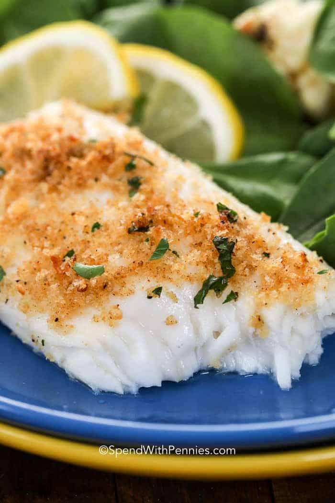

Baked Tilapia

Description
This is a very simple baked tilapia recipe that is a quick and easy
recipe that is an excellent source of protein! It is also a great
alternative to salmon if you are on a budget.
Ingredients
- 4 (4 oz) fillets tilapia
- 2 teaspoons butter
- 1/2 teaspoon garlic salt, or to taste
- 1/4 teaspoon seafood seasoning, or to taste
- 1 lemon, sliced
- 1 (16 oz) package frozen cauliflower with broccoli and red
pepper
- salt and ground black pepper to taste